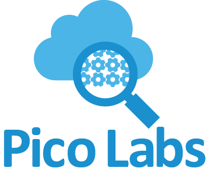

<div class="site-wrapper">

      <div class="site-wrapper-inner">

        <div class="cover-container">

          <div class="masthead clearfix">
            <div class="inner">
              <!-- <h3 class="masthead-brand">Pico Labs</h3> -->
              <nav>
                <ul class="nav masthead-nav">
                  <li class="active"><a href="#">Home</a></li>
                  <li ><a href="https://picolabs.atlassian.net/">Documentation</a></li>
                  <li ><a href="http://forum.picolabs.io/">Forums</a></li>
                  <li ><a href="https://picolabs.atlassian.net/wiki/display/docs/Pico+Engine+Quickstart">Get Started</a></li>
                  <li><a href="https://github.com/Picolab/">Github</a></li>
                  <!-- <li><a href="#">Contact</a></li> -->
                </ul>
              </nav>
            </div>
          </div>

          <div class="inner cover">
	  
<!-- <h1 class="cover-heading">Pico Labs</h1> -->

<p class="lead">
Pico Labs creates Internet of Things technology that <a href="http://www.windley.com/archives/2014/04/the_compuserve_of_things.shtml">preserves personal freedom</a>. 
</p>

<p class="lead">
Pico Labs is responsible for Picos, an actor-based programming system that supports people-centric, reactive programming on the Internet of Things. 
</p>
<p class="lead">
<a href="http://www.windley.com/archives/2015/11/reactive_programming_with_picos.shtml" class="btn btn-lg btn-default">Learn more</a>
</p>
          </div>

          <div class="mastfoot">
            <div class="inner">
              <p>&copy; Copyright Pico Labs, 2015-2017</p>
            </div>
          </div>

        </div>

      </div>

    </div>


